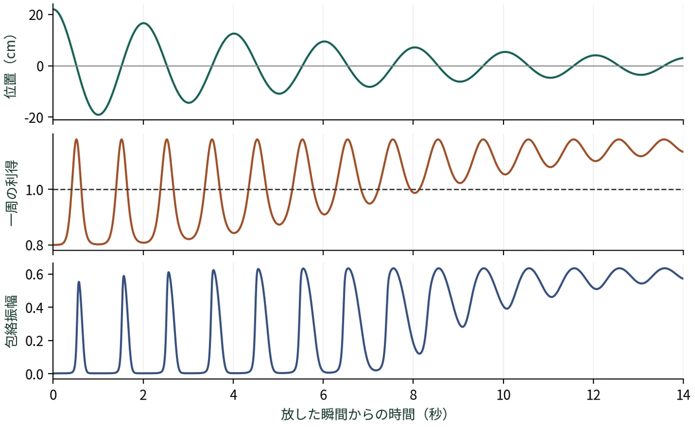

第59章 振り子が描く楽譜
ライヒ《Pendulum Music》を、振り子とフィードバックという二つの時計で計算する。
この章で学ぶこと
- 減衰する振り子の運動を式で表す
- フィードバックで音が育つ条件（一周の利得が1を超える）を知る
- シミュレーションで、断続音が持続音に変わる過程を確かめる
動きが止まると、音が続く
スティーヴ・ライヒ《Pendulum Music》（1968）の演奏で、空中に吊られたマイクは床のスピーカーの上を往復する。近づくたびに短い音が出る。複数のマイクが作る拍動が重なり、離れ、やがて運動が収まってくると、断続していた音が持続する。指揮者も演奏者も、一つ一つの音符に合図を出し続ける必要がない。彫刻家リチャード・セラは1969年のホイットニー美術館での上演に参加し、マイクを放した演奏者も観客と一緒にこの過程を見届けた、と回想する。作曲者の編成指定はマイク、増幅器、スピーカー各3台または4台である。
この作品には少なくとも三種類の時計がある。振り子が戻ってくるまでの秒、電気と空気を音が一周するまでのミリ秒、振幅が育って音がはっきり聞こえるまでの時間である。振り子を長くしたら、拍の間隔と聞こえる音高の両方が同じ割合で下がるだろうか。それぞれの時計を別々に計算してみよう。
振り子は一往復に二つの拍を打つ
支点から質点までの長さを 、鉛直下向きからの角度を 、重力加速度を とする。糸は軽く伸びず、空気抵抗を角速度に比例する摩擦と近似する。重力の接線方向成分は 、質量 の接線加速度は 。摩擦トルクの強さを減衰率 で表せば、運動方程式は 。小角で とすると、解を と置いた特性方程式の根は になる。平方根が正の実数となる弱減衰の場合、この平方根を と書く。水平変位は 。初期位置 から静かに放す条件 を入れて
m、 m/s²、 毎秒なら一往復は 秒。スピーカーが中心にあれば左右どちらから横切っても近くなる。連続する中心通過の間隔は約1.00秒である。機械の一往復を一拍と数えていては二つの音のうち一つを落とす。振幅は減少するが、線形モデル内で中心通過の間隔は変わらない。後半で音の隙間が埋まる理由は、運動が急に速くなることには求められない。
通過する時間と、音が育つ時間
マイクが拾った音が増幅器、スピーカー、空気を通って再びマイクへ届くまでの時間を とする。ある一つの周波数成分について、一周で同位相に戻り、マイクの位置 に応じて振幅が 倍になると仮定する。位置を固定し、外部入力も飽和も除けば、一周ごとの微小振幅は 。帰納法から 。 でゼロへ収束し、 かつ なら小信号は指数的に育つ。ちょうどゼロから始めた数学モデルは でも無音のままである。現物では微小な雑音などが音の種になる。
一周の利得が1.10なら、振幅が10倍になるのに何秒かかるか。 を満たす最小の整数は25。 msの仮想回路なら約0.10秒かかる。マイクの通過が速くて成長に使える時間が短ければ、中心で一瞬だけ利得が1を超えても長い音にならない。位置が動く場合、 周後の比は となる。対数を取れば各時点の の和。現在の位置が同じでも、そこに到達するまでの増幅履歴が異なれば、鳴り方は変わる。
一方、音高には位相の条件がある。たとえば他の経路に位相変化がなく、時間遅れだけが一周の位相を変える理想系なら、周波数 が同位相に戻る条件は （ は整数）。4 msなら250、500、750 Hzなどが候補に並ぶ。どの候補の音が育つかは、周波数別の利得と音の種に依存する。実際の機材では周波数ごとの位相、指向性、距離、反射も関わる。糸の長さだけを測って原曲の音高を当てることはできない。
配列の中で演奏する
下の実験はオフラインで、音を取り込む装置を一切使わない。仮想的な幅8.5 cmの領域を設け、中心から遠ざかると利得が滑らかに下がる例を選ぶ。（ はメートル）。 を解くと m。振り幅が大きいうちは一往復のうち短い区間だけがこの領域に入る。振り幅が小さくなると出入りの境界が消え、中心付近でほぼ連続して音が育つ。振幅の発散を避けるため、計算では原点近くでほぼ線形、大きな正値では1に近づく関数 を選んだ。微小な一定値は一つのモードに入る模擬的な種である。
import numpy as np
tau, beta, L = 0.004, 0.14, 1.0
w = np.sqrt(9.81/L - beta**2)
t = np.arange(0, 14, tau)
x = 0.22*np.exp(-beta*t)*(np.cos(w*t) + beta/w*np.sin(w*t))
gain = 0.80 + 0.38*np.exp(-(x/0.085)**2)
amp = np.zeros(len(t))
for k in range(len(t)-1):
amp[k+1] = np.tanh(gain[k]*amp[k] + 0.0005)
ごとに得た配列はゆっくり変化する包絡である。聴ける波形にするには、別の細かい時間軸（たとえば標本化周波数44100 Hz）へ包絡を線形補間し、小さい一定振幅の250 Hz正弦波に掛ける。中心に来るたびに音が膨らむモデルが、後半で連続音へ変わる。 の幅だけを半分にすると何が起きるか。短い通過ごとの利得の積が小さくなり、断続音が育ちにくく、動きが十分収まる時点も遅れる。このモデルは一つの周波数の包絡だけを計算しており、実演の声のような鳴き方や倍音の競合そのものは録音から聴く必要がある。
やってみよう
聴取課題と解答例。 ソニック・ユースによる録音を、音を出した回数ではなく「隣り合う音の間を無音として数えられるか」で聴く。次にモデルで二本目の を1.21 mとし、両方を同じ側から放す。減衰が小さい近似では通過間隔は 倍。ほぼ1.00秒と1.10秒の脈が並び、その周波数差から相対位相が一周するまで約11秒と予測できる。両者が位相を一周する前に連続音へ移行すれば、その再一致は聞こえにくい。演奏条件の選択には、この二種類の終わり方のどちらを先に迎えるかという作曲上の判断も含まれる。
ここだけ押さえる
- 振り子は一往復で2回中心を通る。長さ1 m なら約1秒ごと。
- 一周の利得が1を超えると、小さな音が指数的に育つ。
- 糸の長さだけでは、鳴る音高は決まらない。
この章の資料
- 作曲者の編成指定と作品ノート。音を発する装置が見える彫刻として配置を考えていた経緯を読む。Steve Reich, Pendulum Music
- 上演に参加した彫刻家による証言。美術館で誰が動き、誰が過程を見届けたかをたどる。Richard Serra, Steve Reich 公式サイト寄稿
- 1999年の録音。上演の動きを見ずに、音の間隔から動きを推量する。Sonic Youth, Pendulum Music, 公式音源
- 糸の長さ・振幅と周期の関係を、小角近似の外側も含めて確認する。OpenStax, Pendulums